GAMEOLOGY
PIATTAFORME
GIOCHI
NOTIZIE
RECENSIONI
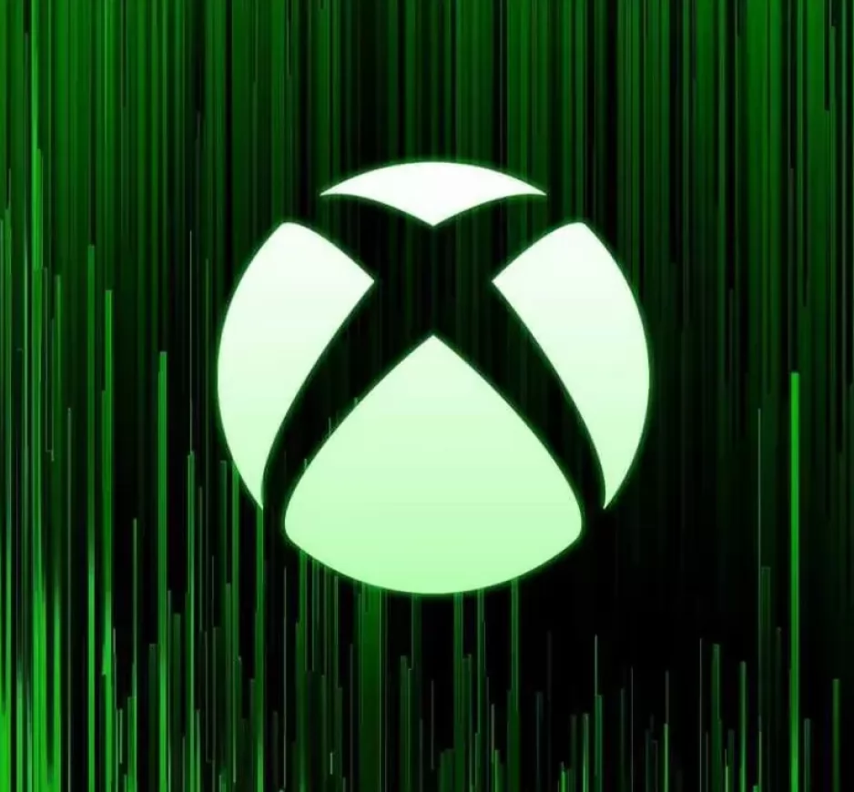
Microsoft: Licenziamenti in casa Xbox, non c'è scampo!
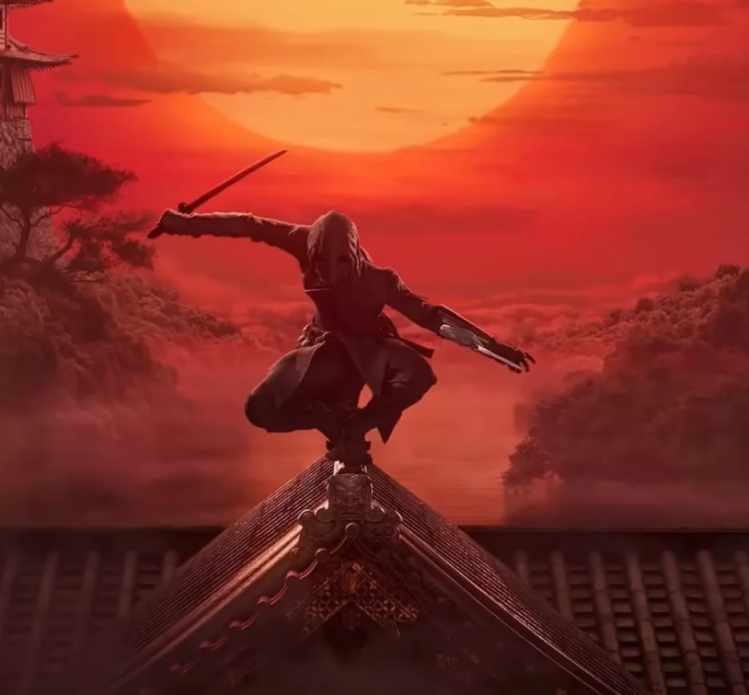
Cosa ci aspettiamo dal nuovo Assassins Creed Red?
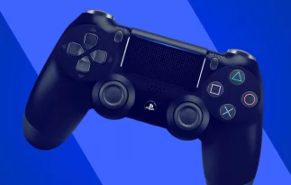
Nel futuro di PlayStation c'è il machine learning? Indizi in un annuncio di lavoro
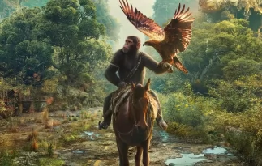
Il pianeta delle scimmie : Hit Or Miss?
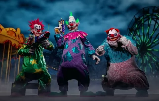
Killer Clown all'attacco! Il gioco ispirato all'omonimo film di serie B
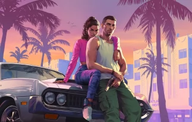
GTA 6 : A quando l'annuncio ufficiale?
CONTENUTI CONSIGLIATI
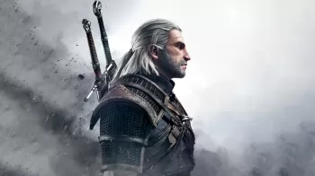
The Witcher 4 : Perchè non vestiremo i panni di Geralt?
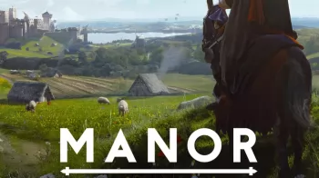
Manor Lords: nessuno credeva nel suo successo, invece ha fatto il botto
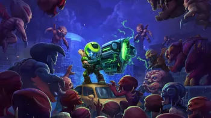
Addio Mighty Doom: il gioco mobile gratis si prepara alla chiusura
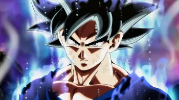
Un famoso gioco di Dragon Ball sta per chiudere definitivamente? Presto gli diremo addio
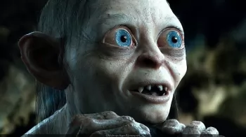
Il Signore Degli Anelli Gollum : Un disastro videoludico
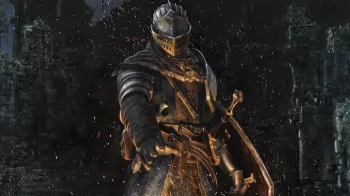
Avete voglia di Dark Souls? Tutto il franchise di FromSoftware è in sconto su Steam!
Jurassic World 3 si farà? Frontier Developments lavora su un nuovo capitolo
Helldivers 2: Arrowhead fa mea culpa riguardo al bilanciamento, nuovo Warbond rinviato?
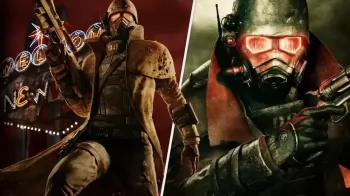
Fallout New Vegas 2 si farà? Non è poi così improbabile, a voler dar retta a Todd Howard
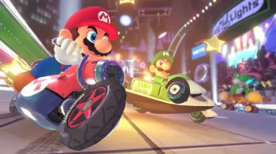
Nintendo Kart : nuovo capitolo da annunciare?
 GAMEOLOGY
GAMEOLOGY